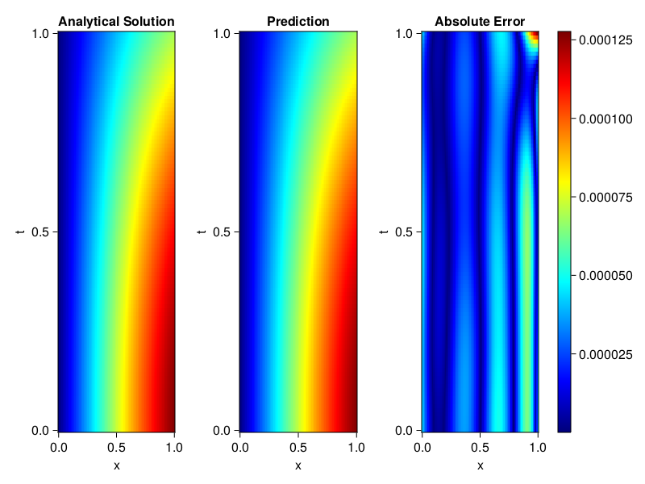
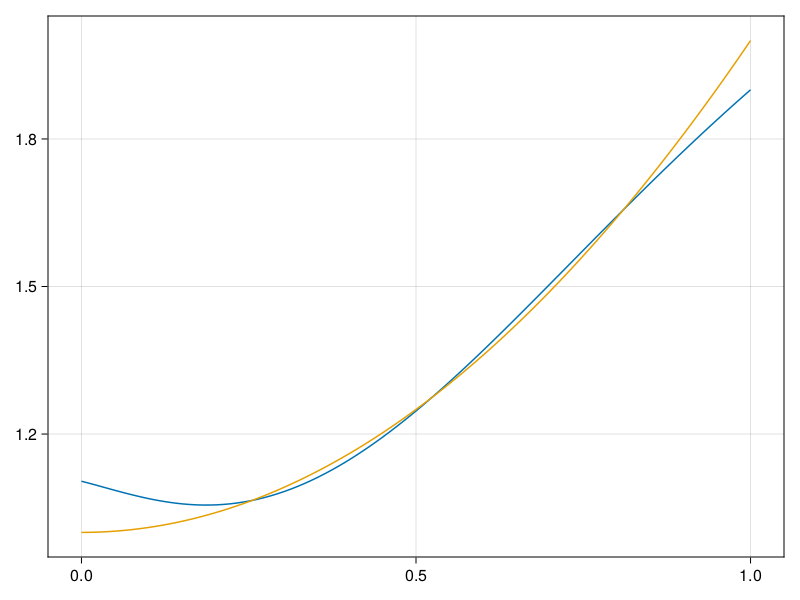

Inverse problem for the wave equation with unknown velocity field
We are going to sovle the wave equation.
using Sophon, ModelingToolkit, IntervalSets
using Optimization, OptimizationOptimJL
@parameters x, t
@variables u(..), c(..)
Dₜ = Differential(t)
Dₜ² = Differential(t)^2
Dₓ² = Differential(x)^2
s(x,t) = abs2(x) * sin(x) * cos(t)
eq = Dₜ²(u(x,t)) ~ c(x) * Dₓ²(u(x,t)) + s(x,t)
bcs = [u(x, 0) ~ sin(x),
Dₜ(u(x, 0)) ~ 0,
u(0, t) ~ 0,
u(1, t) ~ sin(1) * cos(t)]
domains = [t ∈ Interval(0.0, 1.0),
x ∈ Interval(0.0, 1.0)]
@named wave = PDESystem(eq, bcs, domains, [t,x], [u(x,t),c(x)])\[ \begin{align} \frac{\mathrm{d}}{\mathrm{d}t} \frac{\mathrm{d}}{\mathrm{d}t} u\left( x, t \right) =& c\left( x \right) \frac{\mathrm{d}}{\mathrm{d}x} \frac{\mathrm{d}}{\mathrm{d}x} u\left( x, t \right) + \cos\left( t \right) \left|x\right|^{2} \sin\left( x \right) \end{align} \]
Here the velocity field $c(x)$ is unknown, we will approximate it with a neural network.
pinn = PINN(u = FullyConnected((2,16,16,16,1), sin),
c = FullyConnected((1,16,16,1), tanh))
sampler = QuasiRandomSampler(500,100)
strategy = NonAdaptiveTraining(1, (10,10,1,1))NonAdaptiveTraining{Int64, NTuple{4, Int64}}(1, (10, 10, 1, 1))Next we generate some data of $u(x,t)$. Here we place two sensors at $x=0.1$ and $x=0.5$.
ū(x,t) = sin(x) * cos(t)
x_data = hcat(fill(0.1, 1, 50), fill(0.5, 1, 50))
t_data = repeat(range(0.0, 1.0, length = 50),2)'
input_data = [x_data; t_data]
u_data = ū.(x_data, t_data)1×100 Matrix{Float64}:
0.0998334 0.0998126 0.0997503 0.0996464 … 0.275281 0.267213 0.259035Finally we construct the inverse problem and solve it.
additional_loss(phi, θ) = sum(abs2, phi.u(input_data, θ.u) .- u_data)
prob = Sophon.discretize(wave, pinn, sampler, strategy; additional_loss=additional_loss)
@time res = Optimization.solve(prob, BFGS(), maxiters=1000)u: ComponentVector{Float64}(u = (layer_1 = (weight = [-0.7390621248212098 -0.0613565032268866; -0.8236260487350882 -1.0127585479905514; … ; 0.05694301114725551 0.28028817860898797; 0.908725808723825 -1.2390611760913472], bias = [-0.08592992833884197; -0.15519033693588608; … ; 0.04934089860770475; -0.1196804176926025;;]), layer_2 = (weight = [-0.5198788322879605 0.1465309845219588 … -0.3926800396259474 -0.2532226384273019; 0.49354860492265756 -0.17452589220147616 … -0.23494076522457788 0.12887838365732324; … ; 0.593920893055982 0.1926511451925014 … -0.2163357273514734 -0.30188268206845575; 0.15439724208762234 0.28302918342105454 … 0.026866088354973026 -0.16217917201273443], bias = [-0.1950125437836014; 0.10262105566800045; … ; 0.04384457523720277; 0.14471930494362004;;]), layer_3 = (weight = [-0.13381745583349713 -0.26341782907783656 … 0.24091173097409455 0.39846282134032485; -0.1994387725747807 0.550119104231557 … -0.5237538078991653 -0.050744232477419667; … ; -0.23718360613767023 -0.08555189499852853 … -0.29486745208603443 0.4642397482013208; 0.2300495502534081 -0.2799859918041129 … -0.4284561515938821 -0.2932887966907769], bias = [0.020930540134700113; 0.11968784565931063; … ; -0.03146322464002648; 0.008068030314290707;;]), layer_4 = (weight = [0.10589560653667637 0.4798011971763873 … 0.20153504392910848 0.782920290254607], bias = [-0.04981121659736141;;])), c = (layer_1 = (weight = [0.2992687941486744; 1.9887561749193994; … ; -2.8927753797642133; 1.5558721179416004;;], bias = [0.14892252679830545; 0.35158771850400616; … ; -0.04766818840876407; -0.26599198259405293;;]), layer_2 = (weight = [-0.5506447149783674 -0.5397737971687954 … -0.014453271207009726 0.551845820156435; 0.5220690510864988 -0.3112171076932658 … 0.1484137395323195 0.18742756673385827; … ; -0.6581341490854226 0.013708138251768729 … 0.013066816786778578 0.48402677330590527; 0.6611151941510376 0.6644237841462016 … -0.08299645547814252 0.06241971266613632], bias = [0.07890059791819698; -0.07841012560684141; … ; 0.09374127866590194; 0.07759044678465184;;]), layer_3 = (weight = [-0.20931190453962653 -0.3837615087192282 … -0.6945898436982388 0.224832779903924], bias = [-0.4067712296872928;;])))Let's visualize the predictted solution and inferred velocity
using CairoMakie
ts = range(0, 1; length=100)
xs = range(0, 1; length=100)
u_pred = [pinn.phi.u([x, t], res.u.u)[1] for x in xs, t in ts]
c_pred = [pinn.phi.c([x], res.u.c)[1] for x in xs]
u_true = [ū(x, t) for x in xs, t in ts]
c_true = 1 .+ abs2.(xs) |> vec
axis = (xlabel="x", ylabel="t", title="Analytical Solution")
fig, ax1, hm1 = heatmap(xs, ts, u_true, axis=axis; colormap=:jet)
ax2, hm2= heatmap(fig[1, end+1], xs, ts, u_pred, axis= merge(axis, (;title = "Prediction")); colormap=:jet)
ax3, hm3 = heatmap(fig[1, end+1], xs, ts, abs.(u_true .- u_pred), axis= merge(axis, (;title = "Absolute Error")); colormap=:jet)
Colorbar(fig[:, end+1], hm3)
fig
fig, ax = lines(xs, c_pred)
lines!(ax, xs, c_true)
fig